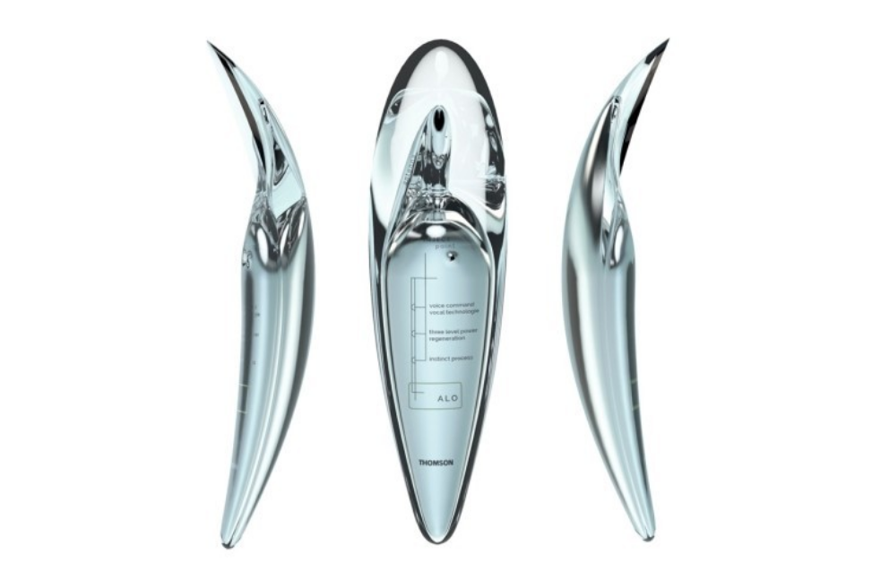
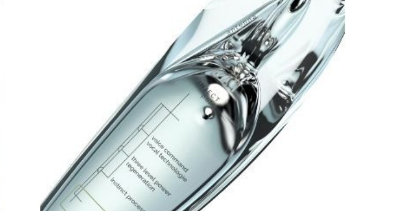
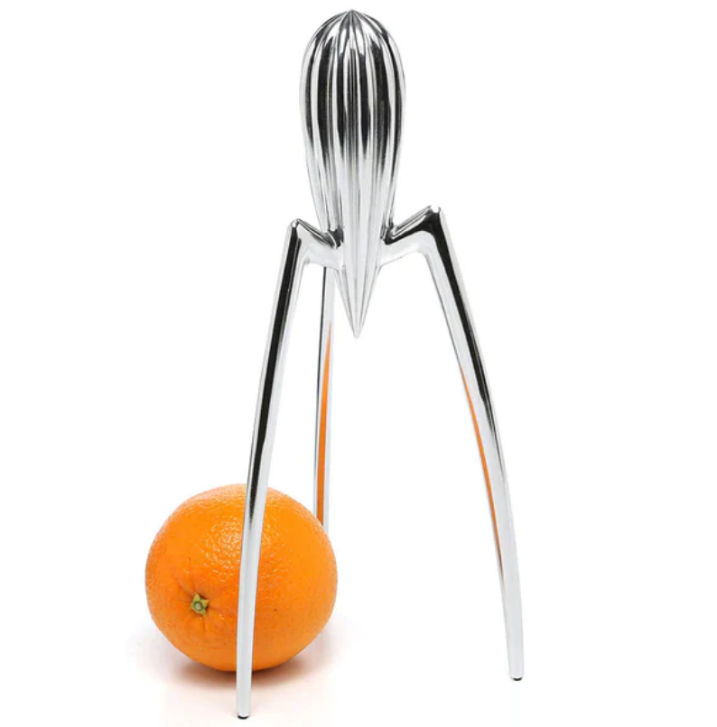
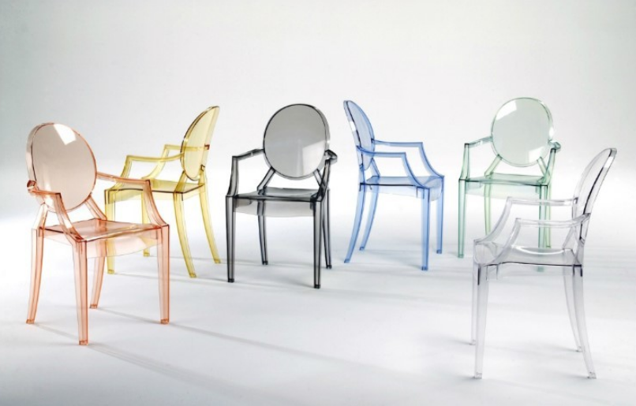
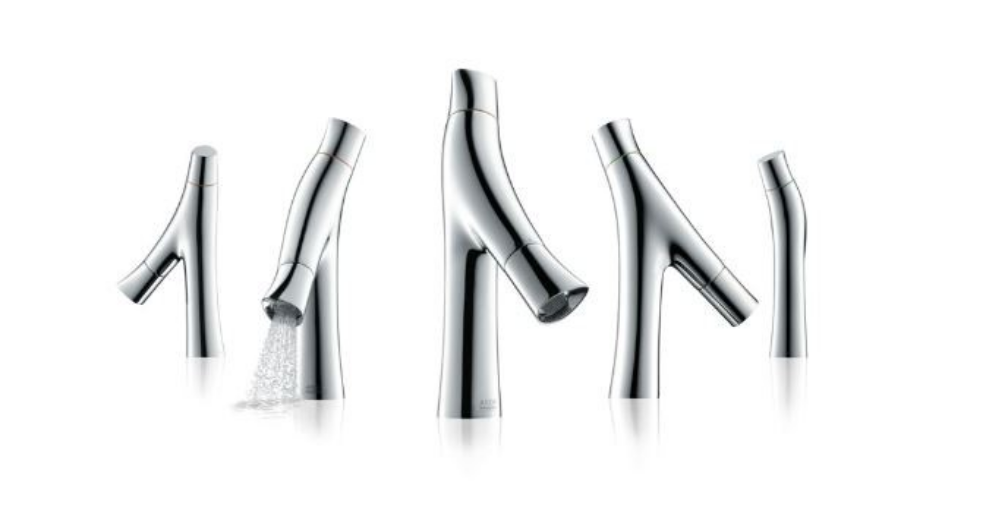
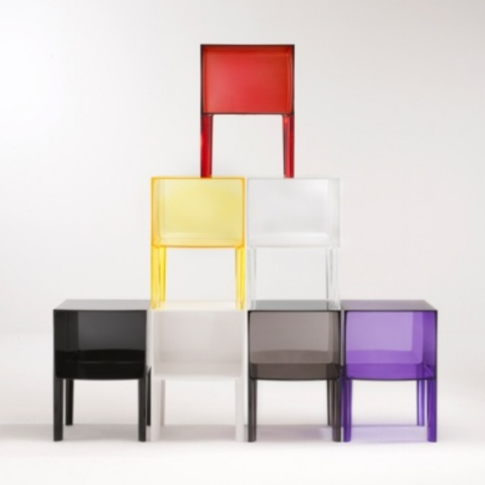

ALO
알로라고 불리는 이 휴대폰은 스크린이 없고 대신 홀로그램, 음성 조작 그리고 촉각 반응에 의지합니다.
상시 작동하는 카메라는 3D 홀로그램 디스플레이를 돕기 위해 사용자의 얼굴을 추적할 수 있으며,
완전히 제거된 스크린은 알로가 더욱 유기적인 형태를 가질 수 있도록 해줍니다.

Jucy Salif
모르는 사람이 없을 정도로 유명한 필립스탁의 작품입니다.
이 작품이 탄생하게된 일화가 아주 흥미로운데
쥬시 살리프는 필립스탁이 레스토랑에서 오징어요리를 먹다가 떠오른 아이디어라고 합니다.
또한 필립스탁은 ' 내 쥬시 살리프는 레몬을 짜기위한것이 아니라 대화를 시작하자는 의미다'라는
의미심장한 말을 남기며 사용자, 또는 관람자와 소통을 하길 원했다고 합니다.

Louis Ghost
스테디셀러 루이 고스트는 프랑스 바로크풍 양식을 현대적으로 재해석해 만든 작품으로
이음새가 없어 내구성이 좋고 아주 튼튼한 의자입니다.
다양한 색감으로 인하여
어떠한 공간이나, 분위기에도 무난하게 잘 어울리는 것이 특징입니다.

AXOR STARCK ORGANIC. (2012)

SMALL GHOST BUSTER (2009, KARTELL)